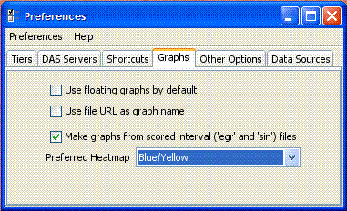
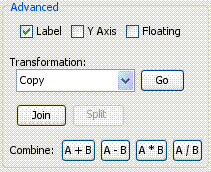

IGB 4.48 and 4.48.02 release notes.
IGB 4.48 is a minor release aimed at improving a few small issues.
Version 4.48.02 is a bug-fix release that resolves a bug with saving files
that was introduced in version 4.48.
A few new features were added in version 4.48.
Highlights:
- Version 4.48
- It is now possible to parse GFF3 files.
(The file extension is ".gff". The first line of the file contains
a header indicating the GFF version.)
This feature is still somewhat experimental. IGB will parse and and display
data from valid GFF3 files that follow the official
GFF3 specifications.
Most currently-available files that claim to be in GFF3 format do not
obey either the required or recommended parts of this specification.
IGB will load most such files, but may not display them well.
When generating GFF3 files, please follow the
official specifications and recommendations.
There is an experimental
GFF3 Validator
that can help ensure conformance.
- Now allows saving of graph files in multiple formats.
When saving graphs of region-based data, where a value is
associated with a range of coordinates, the ".egr" format
will be used. Otherwise, there is a choice between
".gr" (text-based, without sequence names),
".sgr" (text-based, with sequence names),
or ".bgr" (binary).
- Added the abilitly to specify a default graph heatmap.
This, and other graph preferences are now in a separate preferences panel
rather than grouped in the "other" preferences.

Figure: Graph preferences panel.
- IGB now reads a web-based default preferences file.
This allows us to apply new settings when necessary to support
new Affymetrix products without having to release a new version of IGB.
This file will be cached on your local machine and does not have to
be downloaded every time IGB starts.
- Added buttons for performing arithmetic operations on two graphs.
This functionality already existed, but was in a pop-up menu that many
users were unaware of, and didn't work properly for graphs where
the x-values represented ranges rather than single points.
(Known Bug: All four buttons actually perform the subtraction operation.
This bug was fixed in version 4.50.)

Figure: Buttons for graph arithmetic.
- The view will retain your zoom-level settings even when you
resize the window, or perform certain other operations.
- The spliced view is now cleared while it is computing a new view.